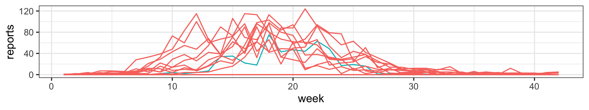
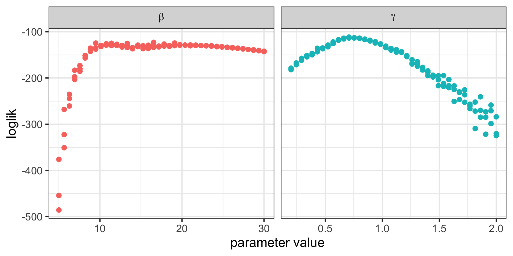
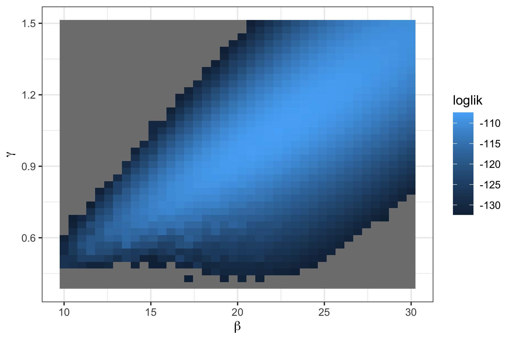

library(foreach) # load foreach
library(doFuture) # load doFuture (and future)
plan(multisession) # using multiple R sessionsLesson 3: Likelihood-based inference for POMP models
Introduction
Objectives
Students completing this lesson will:
- Gain an understanding of the nature of the problem of likelihood computation for POMP models.
- Be able to explain the simplest particle filter algorithm.
- Gain experience in the visualization and exploration of likelihood surfaces.
- Be able to explain the tools of likelihood-based statistical inference that become available given numerical accessibility of the likelihood function.
Overview
A general framework of epidemiological inference includes three layers:
- The input: a model of interest and the given data
- A method for inference
- Inferences include estimation, uncertainty, prediction and forecast, and model selection.
Methods for inference can be categorized into three groups:
- Optimization-based: minimize a cost function (e.g., SSE, MSE, MAE) that measures the difference between observed data and model predictions
- Likelihood-based: maximize a likelihood function, which represents the probability of observing the given data given the parameters
- Summary Statistics-based: use a set of features of the data instead of the full set of data
In this lesson, we focus on the likelihood-based method because
- it fits for stochastic models and
- it incorporates all data (i.e., full-information).
The likelihood function
General considerations
The likelihood
- The basis for modern frequentist, Bayesian, and information-theoretic inference.
- Method of maximum likelihood introduced by Fisher (1922).
- The likelihood function itself is a representation of the what the data have to say about the parameters.
- A good general reference on likelihood is by Pawitan (2001).
- Goal: fit the model to the data and conduct statistical inferences, such as parameter estimation.
- The likelihood, thus, can be considered as a metric to assess the goodness of the proposed parameters.
- By exploring the space of parameters, we can eventually obtain the maximum likelihood estimator (MLE).
Thus, the objective of this lesson is to discuss how we compute the likelihood given a model of interest with a proposed set of parameters in both theory and in pomp.
Definition of the likelihood function
- Notations:
- \(y_{1:N}^*\): the data, a sequence of \(N\) observations
- \(f_{Y_{1:N}}(y_{1:N};\theta)\): the statistical model, a probability distribution for each value of a parameter vector \(\theta\)
- \(Y_{1:N} \sim f_{Y_{1:N}}(y_{1:N};\theta)\): a random variable drawn from distribution \(f_{Y_{1:N}}(y_{1:N};\theta)\)
- The likelihood function is \[\lik(\theta) = f_{Y_{1:N}}(y^*_{1:N};\theta),\] the density function evaluated at the data.
- It is often convenient to work with the log-likelihood function, \[\loglik(\theta)= \log \lik(\theta) = \log f_{Y_{1:N}}(y^*_{1:N};\theta).\]
A simulator is implicitly a statistical model
- \(f_{Y_{1:N}}(y_{1:N};\theta)\) is simple and with an explicit expression:
- the simulation of \(Y_{1:N}\) is direct, e.g., \(Y_k \sim N(0,1)\) for \(k=1,\dots,N\)
- the likelihood function is explicit
- \(f_{Y_{1:N}}(y_{1:N};\theta)\) is complex or even without an explicit expression:
- the simulation of \(Y_{1:N}\), given the underlying dynamical model, is a bit more complex but convenient
- the likelihood function exists with a complicated expression or even without an explicit expression
Thus, we can develop numerical methods to compute the complex or implicit likelihood functions!
Likelihood of a POMP model
The likelihood for a POMP model
Recall the following schematic diagram, showing dependence among variables in a POMP model.
Recall the following definitions and properties:
Measurements: \(Y_n\), at time \(t_n\) depend on the latent process, \(X_n\), at that time.
The Markov property: latent process variables depend on their value at the previous timestep.
- The distribution of the state \(X_{n+1}\), conditional on \(X_{n}\), is independent of the values of \(X_{k}\), \(k<n\) and \(Y_{k}\), \(k\le n\).
- The distribution of the measurement \(Y_{n}\), conditional on \(X_{n}\), is independent of all other variables.
The latent process: \(X(t)\), may be defined at all times, but we are particularly interested in its value at observation times. Therefore, we write \[X_n=X(t_n).\]
- We write collections of random variables using the notation \(X_{0:N}=(X_0,\dots,X_N)\).
The one-step transition density: \(f_{X_n|X_{n-1}}(x_n|x_{n-1};\theta)\), together with the measurement density, \(f_{Y_n|X_n}(y_n|x_n;\theta)\) and the initial density, \(f_{X_0}(x_0;\theta)\), specify the entire joint density via
\[ \begin{split} &f_{X_{0:N},Y_{1:N}}(x_{0:N},y_{1:N};\theta)\\ & \qquad = f_{X_0}(x_0;\theta)\,\prod_{n=1}^N\!f_{X_n | X_{n-1}}(x_n|x_{n-1};\theta)\,f_{Y_n|X_n}(y_n|x_n;\theta). \end{split} \]
The marginal density for sequence of measurements: \(Y_{1:N}\), evaluated at the data, \(y_{1:N}^*\), is \[ \lik(\theta) = f_{Y_{1:N}}(y^*_{1:N};\theta)=\int\!f_{X_{0:N},Y_{1:N}}(x_{0:N},y^*_{1:N};\theta)\, dx_{0:N}. \]
Special case: deterministic latent process
- When the latent process is non-random, the log-likelihood for a POMP model closely resembles a nonlinear regression model.
- In this case, we can write \(X_{n}=x_n(\theta)\), and the log-likelihood is \[\loglik(\theta) = \sum_{n=1}^N \log f_{Y_n|X_n}\big(y_n^*| x_n(\theta); \theta\big).\]
- If we have a Gaussian measurement model, where \(Y_n\) given \(X_n=x_n(\theta)\) is conditionally normal with mean \(\hat{y}_n\big(x_n(\theta)\big)\) and constant variance \(\sigma^2\), then the log-likelihood contains a sum of squares which is exactly the criterion that nonlinear least squares regression seeks to minimize.
- More details on deterministic latent process models are given as a supplement.
General case: stochastic unobserved state process
- For a POMP model, the likelihood takes the form of an integral:
\[ \begin{aligned} \lik(\theta) &= f_{Y_{1:N}}({y^*_{1:N}};\theta)\\ = &\int f_{X_0}(x_0;\theta)\prod_{n=1}^{N}\!f_{Y_n|X_n}({y^*_n}| x_n; \theta)\, f_{X_n|X_{n-1}}(x_n|x_{n-1};\theta)\, dx_{0:N}. \end{aligned} \tag{1}\]
- This integral is high dimensional and, except for the simplest cases, can not be reduced analytically.
Computing the likelihood
Monte Carlo algorithms
Monte Carlo likelihood: direct simulation
Spoiler Alert: This section serves to introduce the concept of the particle filter and the approach of Monte Carlo integration by first proposing an intuitive and a simpler method. This simple method usually does NOT work on anything but very short time series.
- Let’s rewrite the likelihood integral using an equivalent factorization. As an exercise, you could check how the equivalence of Equation 1 and Equation 2 follows algebraically from the Markov property and the definition of conditional density.
\[ \begin{aligned} \lik(\theta) &= f_{Y_{1:N}}({y^*_{1:N}};\theta)\\ &= \int\!\left\{\prod_{n=1}^{N}\!f_{Y_n|X_n}({y^*_n}| x_n; \theta)\right\}\,f_{X_{0:N}}(x_{0:N};\theta)\, dx_{0:N}. \end{aligned} \tag{2}\]
- Notice, using the representation in Equation 2, that the likelihood can be written as an expectation, \[\begin{equation*} \lik(\theta) = \E \left[ \prod_{n=1}^{N}\!f_{Y_n|X_n}({y^*_n}| X_n; \theta) \right], \end{equation*}\] where the expectation is taken with \(X_{0:N}\sim f_{X_{0:N}}(x_{0:N};\theta)\).
- Now, using a law of large numbers, we can approximate an expectation by the average of a Monte Carlo sample. Thus, \[ \lik(\theta) \approx \frac{1}{J} \sum_{j=1}^{J}\prod_{n=1}^{N}\!f_{Y_n|X_n}({y^*_n}| X^j_n; \theta), \] where \(\{X^j_{0:N}, j=1,\dots,J\}\) is a Monte Carlo sample of size \(J\) drawn from \(f_{X_{0:N}}(x_{0:N};\theta)\).
In conclusion, we can generate trajectories by simulation and all we need to do to get a Monte Carlo estimate of the likelihood is to evaluate the measurement density of the data at each trajectory and average. In the context of the plug-and-play framework, our algorithm depends on rprocess for simulation but does not require dprocess for evaluation. However, this naive approach scales poorly with dimension:
it requires a Monte Carlo effort that scales exponentially with the length of the time series, and so is infeasible on anything but a short data set;
due to stochasticity, once a simulated trajectory diverges from the data, it will seldom come back;
simulations that lose track and deviate from the data are harmful for likelihood estimation;
when simulating a long time series, almost all the simulated trajectories will eventually lose track of the data.
measles outbreak example: supplementary material.
Sequential Monte Carlo
Sequential Monte Carlo: The particle filter
Fortunately, we can compute the likelihood for a POMP model by a much more efficient algorithm than direct Monte Carlo integration:
- We proceed by factorizing the likelihood in a different way:
\[ \begin{aligned} \lik(\theta)&=f_{Y_{1:N}}(y^*_{1:N}; \theta) =\prod_{n=1}^N\,f_{Y_n|Y_{1:n-1}}(y^*_n|y^*_{1:n-1};\theta)\\ &=\prod_{n=1}^N\,\int f_{Y_n|X_n}(y^*_n|x_n;\theta)\,f_{X_n|Y_{1:n-1}}(x_n|y^*_{1:n-1};\theta)\, dx_{n}, \end{aligned} \] with the understanding that \(f_{X_1|Y_{1:0}}=f_{X_1}\).
The Markov property leads to the prediction formula: \[ \begin{aligned} &f_{X_n|Y_{1:n-1}}(x_n|y^*_{1:n-1}; \theta) \\ &\quad = \int \! f_{X_n|X_{n-1}}(x_n|x_{n-1};\theta)\, f_{X_{n-1}|Y_{1:n-1}}(x_{n-1}| y^*_{1:n-1}; \theta) \, dx_{n-1}. \end{aligned} \]
Bayes’ theorem gives the filtering formula: \[ \begin{aligned} &f_{X_n|Y_{1:n}}(x_n|y^*_{1:n}; \theta)\\ &\quad = f_{X_n|Y_n,Y_{1:n-1}}(x_n|y^*_n,y^*_{1:n-1}; \theta) \\ &\quad =\frac{f_{Y_n|X_n}(y^*_{n}|x_{n};\theta)\,f_{X_n|Y_{1:n-1}}(x_{n}|y^*_{1:n-1};\theta)}{\int f_{Y_n|X_n}(y^*_{n}|u_{n};\theta)\,f_{X_n|Y_{1:n-1}}(u_{n}|y^*_{1:n-1};\theta)\, du_n}. \end{aligned} \]
This suggests that we keep track of two key distributions at each time \(t_n\),
- The prediction distribution is \(f_{X_n | Y_{1:n-1}}(x_n| y^*_{1:n-1})\).
- The filtering distribution is \(f_{X_{n} | Y_{1:n}}(x_n| y^*_{1:n})\).
The prediction and filtering formulas give us a two-step recursion:
- The prediction formula gives the prediction distribution at time \(t_n\) using the filtering distribution at time \(t_{n-1}\).
- The filtering formula gives the filtering distribution at time \(t_n\) using the prediction distribution at time \(t_n\).
The particle filter use Monte Carlo techniques to sequentially estimate the integrals in the prediction and filtering recursions. Hence, the alternative name of sequential Monte Carlo (SMC).
A basic particle filter is described as follows:
- Suppose \(X_{n-1,j}^{F}\), \(j=1,\dots,J\) is a set of \(J\) points drawn from the filtering distribution at time \(t_{n-1}\).
- We obtain a sample \(X_{n,j}^{P}\) of points drawn from the prediction distribution at time \(t_n\) by simply simulating the process model: \[ X_{n,j}^{P} \sim \mathrm{process}(X_{n-1,j}^{F},\theta), \qquad j=1,\dots,J. \]
- Having obtained \(x_{n,j}^{P}\), we obtain a sample of points from the filtering distribution at time \(t_n\) by resampling from \(\big\{X_{n,j}^{P},j\in 1:J\big\}\) with weights \[ w_{n,j}=f_{Y_n|X_n}(y^*_{n}|X^P_{n,j};\theta). \]
- The Monte Carlo principle tells us that the conditional likelihood \[ \begin{aligned} \lik_n(\theta) &= f_{Y_n|Y_{1:n-1}}(y^*_n|y^*_{1:n-1};\theta)\\ &= \int f_{Y_n|X_n}(y^*_{n}|x_{n};\theta)\,f_{X_n|Y_{1:n-1}}(x_{n}|y^*_{1:n-1};\theta)\, dx_n \end{aligned} \] is approximated by \[ \hat{\lik}_n(\theta)\approx\frac{1}{J}\,\sum_j\,f_{Y_n|X_n}(y^*_{n}|X_{n,j}^{P};\theta) \] since \(X_{n,j}^{P}\) is approximately a draw from \(f_{X_n|Y_{1:n-1}}(x_{n}|y^*_{1:n-1};\theta)\).
- We can iterate this procedure through the data, one step at a time, alternately simulating and resampling, until we reach \(n=N\).
- The full log-likelihood then has approximation \[ \loglik(\theta) = \log{{\lik}(\theta)} = \sum_n \log{{\lik}_n(\theta)} \approx \sum_n\log\hat{\lik}_n(\theta). \]
- References on the particle filter include Kitagawa (1987), Arulampalam et al. (2002), Doucet, Freitas, and Gordon (2001), King, Nguyen, and Ionides (2016).
- It can be shown that the particle filter provides an unbiased estimate of the likelihood. This implies a consistent but biased estimate of the log-likelihood.
A block diagram representation of a particle filter
Parallel computing
It will be helpful to parallelize most of the computations. Most machines nowadays have multiple cores and using this computational capacity is as simple as:
- letting
Rknow you plan to use multiple processors; - using the parallel for loop provided by the
foreachpackage; and - paying proper attention to the use of parallel random number generators (RNG).
For example:
The second line tells foreach that we will use the doFuture backend. By default, R will attempt to determine how many cores are available and will run an appropriate number of concurrent R processes.
Particle filtering in pomp
Recall the measles-outbreak example and the stochastic SIR model that we construct in the previous lesson, we can using the pfilter function to compute the likelihood using particle filtering method, given the parameters chosen by looking at simulations. R code to build the model is available here. We can execute this code by sourcing the file and check the parameters:
source("model_measSIR.R")
measSIR@params Beta Gamma Rho k Eta N
1.5e+01 5.0e-01 5.0e-01 1.0e+01 6.0e-02 3.8e+04 In pomp, we can compute the likelihood using the particle filtering method, implemented by function pfilter. The argument Np assigns the number of particles used:
library(pomp)
pf <- measSIR |> pfilter(Np=5000)
logLik(pf)[1] -131.0779The particle filtering method relies heavily on the state process and the measurement model. Therefore, it is necessary to make sure that the basic particle filter is working.
- Check the
rprocessand thermeasureby simulation, as shown in Lesson 2:
measSIR |>
simulate(nsim=20,format="data.frame",include.data=TRUE) |>
ggplot(aes(x=week,y=reports,group=.id,color=.id=="data")) +
geom_line() + guides(color="none")
- A diagnostic plot to check the
rprocessand thedmeasure:
plot(pf)The data,
reports;The effective sample size of the particle filter,
ess;The log-likelihood of each observation conditioned on the preceding ones,
cond.logLik.
- The Monte Carlo variability of the likelihood:
plan(multisession)
foreach (
i=1:10, .combine=c, .options.future=list(seed=652643293)
) %dofuture% {
measSIR |> pfilter(Np=5000)
} -> pf
logLik(pf) -> ll
logmeanexp(ll,se=TRUE) est se
-130.037782 1.253115 Note that we set the parallel RNG seed in the foreach call.
Likelihood-based inference
Parameter estimates and uncertainty quantification
Review of likelihood-based inference
For now, let us suppose that software exists to evaluate and maximize the likelihood function, up to a tolerable numerical error, for the dynamic models of interest. Our immediate task is to think about how to use that capability.
- Likelihood-based inference (meaning statistical tools based on the likelihood function) provides tools for parameter estimation, standard errors, hypothesis tests and diagnosing model misspecification.
- Likelihood-based inference often (but not always) has favorable theoretical properties. Here, we are not especially concerned with the underlying theory of likelihood-based inference. On any practical problem, we can check the properties of a statistical procedure by simulation experiments.
The maximum likelihood estimate (MLE)
- A maximum likelihood estimate (MLE) is \[\begin{equation*} \hat\theta = \argmax_{\theta} \loglik(\theta), \end{equation*}\] where \(\argmax_{\theta} g(\theta)\) means a value of argument \(\theta\) at which the maximum of the function \(g\) is attained, so \(g\left(\argmax_{\theta} g(\theta)\right) = \max_\theta g(\theta)\).
- If there are many values of \(\theta\) giving the same maximum value of the likelihood, then an MLE still exists but is not unique.
- Note that \(\argmax_{\theta} \lik(\theta)\) and \(\argmax_{\theta} \loglik(\theta)\) are the same. Why?
Standard errors for the MLE
- Parameter estimates are not very useful without some measure of their uncertainty.
- Usually, this means obtaining a confidence interval, or in practice an interval close to a true confidence interval which should formally be called an approximate confidence interval. In practice, the word “approximate” is often dropped!
There are three main approaches to estimating the statistical uncertainty in an MLE.
The Fisher information.
Profile likelihood estimation.
A simulation study, also known as a bootstrap.
Fisher information
- A computationally quick approach when one has access to satisfactory numerical second derivatives of the log-likelihood.
- The approximation is satisfactory only when \(\hat\theta\) is well approximated by a normal distribution.
- Neither of the two requirements above are typically met for POMP models.
- A review of standard errors via Fisher information is provided as a supplement.
Profile likelihood estimation
This approach is generally preferable to the Fisher information for POMP models.
We will explain this method below and put it into practice in the next lesson.
The bootstrap
- If done carefully and well, this can be the best approach.
- A confidence interval is a claim about reproducibility. You claim, so far as your model is correct, that on 95% of realizations from the model, a 95% confidence interval you have constructed will cover the true value of the parameter.
- A simulation study can check this claim fairly directly, but requires the most effort.
- The simulation study takes time for you to develop and debug, time for you to explain, and time for the reader to understand and check what you have done. We usually carry out simulation studies to check our main conclusions only.
- Further discussion of bootstrap methods for POMP models is provided as a supplement.
Confidence intervals via the profile likelihood
- Let’s consider the problem of obtaining a confidence interval for the first component of \(\theta\). We’ll write \[\theta=(\phi,\psi).\]
- The profile log-likelihood function of \(\phi\) is defined to be \[\begin{equation*} \profileloglik{{}}(\phi) = \max_{\psi}\loglik(\phi,\psi). \end{equation*}\] In general, the profile likelihood of one parameter is constructed by maximizing the likelihood function over all other parameters.
- Note that, \(\max_{\phi}\profileloglik{{}}(\phi) = \max_{\theta}\loglik(\theta)\) and that maximizing the profile likelihood \(\profileloglik{{}}(\phi)\) gives the MLE, \(\hat{\theta}\). Why?
- An approximate 95% confidence interval for \(\phi\) is given by \[\begin{equation*} \big\{\phi : \loglik(\hat\theta) - \profileloglik{{}}(\phi) < 1.92\big\}. \end{equation*}\]
- This is known as a profile likelihood confidence interval. The cutoff \(1.92\) is derived using Wilks’ theorem, which we will discuss in more detail when we develop likelihood ratio tests.
- Although the asymptotic justification of Wilks’ theorem is the same limit that justifies the Fisher information standard errors, profile likelihood confidence intervals tend to work better than Fisher information confidence intervals when \(N\) is not so large—particularly when the log-likelihood function is not close to quadratic near its maximum.
Geometry of the likelihood function
The likelihood surface
- It is extremely useful to visualize the geometric surface defined by the likelihood function.
- If \(\Theta\) is two-dimensional, then the surface \(\loglik(\theta)\) has features like a landscape.
- Local maxima of \(\loglik(\theta)\) are peaks.
- Local minima are valleys.
- Peaks may be separated by a valley or may be joined by a ridge. If you go along the ridge, you may be able to go from one peak to the other without losing much elevation. Narrow ridges can be easy to fall off, and hard to get back on to.
- In higher dimensions, one can still think of peaks and valleys and ridges. However, as the dimension increases it quickly becomes hard to imagine the surface.
Exploring the likelihood surface: slices
To get an idea of what the likelihood surface looks like in the neighborhood of a point in parameter space, we can construct some likelihood slices.
A likelihood slice is a cross-section through the likelihood surface.
We’ll make slices for our Consett measles POMP model, in the \(\beta\) and \(\mu_{IR}\) directions.
Both slices will pass through our current candidate parameter vector, stored in the
pompmodel object.
Questions:
What is the difference between a likelihood slice and a profile?
What is the consequence of this difference for the statistical interpretation of these plots?
How should you decide whether to compute a profile or a slice?
Slicing the measles SIR likelihood
- We first construct a data frame to explore the parameter slice, with \(40\times 3+40\times 3=240\) rows:
slice_design(
center = coef(measSIR),
Beta = rep(seq(from=5,to=30,length=40),each=3),
Gamma = rep(seq(from=0.2,to=2,length=40),each=3)
) -> param_slice
dim(param_slice)[1] 240 7- We compute the likelihoods \(3\) times for each combination (i.e., row) in
param_slice:
library(iterators)
plan(multisession)
foreach (theta=iter(param_slice,"row"), .combine=rbind,
.options.future=list(seed=108028909)) %dofuture% {
measSIR |> pfilter(params=theta,Np=5000) -> pf
theta$loglik <- logLik(pf)
theta
} -> lik_slice
- Slices offer a very limited perspective on the geometry of the likelihood surface.
- When there are only one or two unknown parameters, we can evaluate the likelihood at a grid of points and visualize the surface directly.
Two-dimensional likelihood slice
- We first construct the parameters grid data frame
param_grid, with \(40\times 3 \times 40\times 3=14,400\) rows:
expand.grid(
Beta = rep(seq(from=10,to=30,length=40), each=3),
Gamma = rep(seq(from=0.4,to=1.5,length=40), each=3),
Rho = 0.5, k=10, Eta=0.06, N=38000
) -> param_grid
dim(param_grid)[1] 14400 6- We then compute likelihoods for each of the combinations:
plan(multisession)
foreach (theta=iter(param_grid,"row"), .combine=rbind,
.options.future=list(seed=421776444)) %dofuture% {
measSIR |> pfilter(params=theta,Np=5000) -> pf
theta$loglik <- logLik(pf)
theta
} -> lik_grid
In the above, all points with log-likelihoods less than 25 units below the maximum are shown in grey.
Notice some features of the log-likelihood surface, and its estimate from the particle filter, that can cause difficulties for numerical methods:
- The surface is wedge-shaped, so its curvature varies considerably. By contrast, asymptotic theory predicts a parabolic surface that has constant curvature.
- Monte Carlo noise in the likelihood evaluation makes it hard to pick out exactly where the likelihood is maximized. Nevertheless, the major features of the likelihood surface are evident despite the noise.
Wedge-shaped relationships between parameters, and nonlinear relationships, are common features of epidemiological dynamic models. We’ll see this in the case studies.
Exercises
Cost of a particle-filter calculation
- How much computer processing time does a particle filter take?
- How does this scale with the number of particles?
Form a conjecture based upon your understanding of the algorithm. Test your conjecture by running a sequence of particle filter operations, with increasing numbers of particles (Np), measuring the time taken for each one using system.time. Plot and interpret your results.
log-likelihood estimation
Here are some desiderata for a Monte Carlo log-likelihood approximation:
- It should have low Monte Carlo bias and variance.
- It should be presented together with estimates of the bias and variance so that we know the extent of Monte Carlo uncertainty in our results.
- It should be computed in a length of time appropriate for the circumstances.
Set up a likelihood evaluation for the measles model, choosing the numbers of particles and replications so that your evaluation takes approximately one minute on your machine.
- Provide a Monte Carlo standard error for your estimate.
- Comment on the bias of your estimate.
- Use doFuture to take advantage of multiple cores on your computer to improve your estimate.
Exercises
One-dimensional likelihood slice: Compute several likelihood slices in the \(\eta\) direction.
Two-dimensional likelihood slice: Compute a slice of the likelihood in the \(\beta\)-\(\eta\) plane.
More on likelihood-based inference
Maximizing the likelihood
Maximizing the particle filter likelihood
- Likelihood maximization is key to profile intervals, likelihood ratio tests and AIC as well as the computation of the MLE.
- An initial approach to likelihood maximization might be to stick the particle filter log-likelihood estimate into a standard numerical optimizer, such as the Nelder-Mead algorithm.
- In practice this approach is unsatisfactory on all but the smallest POMP models. Standard numerical optimizers are not designed to maximize noisy and computationally expensive Monte Carlo functions.
- Further investigation into this approach is available as a supplement.
- We’ll present an iterated filtering algorithm for maximizing the likelihood in a way that takes advantage of the structure of POMP models and the particle filter.
- First, let’s think a bit about some practical considerations in interpreting the MLE for a POMP.
Likelihood-based model selection and model diagnostics
- For nested hypotheses, we can carry out model selection by likelihood ratio tests.
- For non-nested hypotheses, likelihoods can be compared using Akaike’s information criterion (AIC) or related methods.
Likelihood ratio test
Likelihood ratio tests for nested hypotheses
- The whole parameter space on which the model is defined is \(\Theta\subset\R^D\).
- Suppose we have two nested hypotheses \[\begin{equation*} \begin{aligned} H^{\langle 0\rangle} &: \theta\in \Theta^{\langle 0\rangle}, \\ H^{\langle 1\rangle} &: \theta\in \Theta^{\langle 1\rangle}, \end{aligned} \end{equation*}\] defined via two nested parameter subspaces, \(\Theta^{\langle 0\rangle}\subset \Theta^{\langle 1\rangle}\), with respective dimensions \(D^{\langle 0\rangle}< D^{\langle 1\rangle}\le D\).
- We consider the log-likelihood maximized over each of the hypotheses, \[ \begin{aligned} \ell^{\langle 0\rangle} &= \sup_{\theta\in \Theta^{\langle 0\rangle}} \ell(\theta), \\ \ell^{\langle 1\rangle} &= \sup_{\theta\in \Theta^{\langle 1\rangle}} \ell(\theta). \end{aligned} \]
- Wilks approximation: under the hypothesis \(H^{\langle 0\rangle}\), \[ \ell^{\langle 1\rangle} - \ell^{\langle 0\rangle} \approx \tfrac{1}{2}\,\chi^2_{D^{\langle 1\rangle}- D^{\langle 0\rangle}}, \] where \(\chi^2_d\) is a chi-squared random variable on \(d\) degrees of freedom and \(\approx\) means “is approximately distributed as”.
- The Wilks approximation can be used to construct a hypothesis test of the null hypothesis \(H^{\langle 0\rangle}\) against the alternative \(H^{\langle 1\rangle}\).
- This is called a likelihood ratio test since a difference of log-likelihoods corresponds to a ratio of likelihoods.
- When the data are IID, \(N\to\infty\), and the hypotheses satisfy suitable regularity conditions, this approximation can be derived mathematically and is known as Wilks’ theorem.
- The chi-squared approximation to the likelihood ratio statistic may be useful, and can be assessed empirically by a simulation study, even in situations that do not formally satisfy any known theorem.
Wilks’ theorem and profile likelihood
- Suppose we have an MLE, written \(\hat\theta=(\hat\phi,\hat\psi)\), and a profile log-likelihood for \(\phi\), given by \(\profileloglik{{}}(\phi)\).
- Consider the likelihood ratio test for the nested hypotheses \[\begin{equation*} \begin{aligned} H^{\langle 0\rangle} &: \phi = \phi_0, \\ H^{\langle 1\rangle} &: \text{$\phi$ unconstrained}. \end{aligned} \end{equation*}\]
- We can compute the 95%-ile for a chi-squared distribution with one degree of freedom:
qchisq(0.95,df=1)\(=3.841\). - Wilks’ theorem then gives us a hypothesis test with approximate size \(5\%\) that rejects \(H^{\langle 0\rangle}\) if \(\profileloglik{{}}(\hat\phi)-\profileloglik{{}}(\phi_0)<3.84/2\).
- It follows that, with probability \(95\%\), the true value of \(\phi\) falls in the set \[\begin{equation*} \big\{\phi: \profileloglik{{}}(\hat\phi)-\profileloglik{{}}(\phi)<1.92\big\}. \end{equation*}\] So, we have constructed a profile likelihood confidence interval, consisting of the set of points on the profile likelihood within \(1.92\) log units of the maximum.
- This is an example of a general duality between confidence intervals and hypothesis tests.
Information criteria
Akaike’s information criterion (AIC)
- Likelihood ratio tests provide an approach to model selection for nested hypotheses, but what do we do when models are not nested?
- A more general approach is to compare likelihoods of different models by penalizing the likelihood of each model by a measure of its complexity.
- Akaike’s information criterion AIC is given by \[\begin{equation*} \mathrm{AIC} = -2\,\loglik(\hat{\theta}) + 2\,D \end{equation*}\] “Minus twice the maximized log-likelihood plus twice the number of parameters.”
- We are invited to select the model with the lowest AIC score.
- AIC was derived as an approach to minimizing prediction error. Increasing the number of parameters leads to additional overfitting which can decrease predictive skill of the fitted model.
- Viewed as a hypothesis test, AIC may have weak statistical properties. It can be a mistake to interpret AIC by making a claim that the favored model has been shown to provide a superior explanation of the data. However, viewed as a way to select a model with reasonable predictive skill from a range of possibilities, it is often useful.
- AIC does not penalize model complexity beyond the consequence of reduced predictive skill due to overfitting. One can penalize complexity by incorporating a more severe penalty than the \(2D\) term above, such as via BIC.
- A practical approach is to use AIC, while taking care to view it as a procedure to select a reasonable predictive model and not as a formal hypothesis test.
References
References
Arulampalam, M. S., S. Maskell, N. Gordon, and T. Clapp. 2002. “A Tutorial on Particle Filters for Online Nonlinear, Non-Gaussian Bayesian Tracking.” IEEE Trans Signal Process 50: 174–88. https://doi.org/10.1109/78.978374.
Doucet, Arnaud, Nando de Freitas, and Neil Gordon, eds. 2001. Sequential Monte Carlo Methods in Practice. New York: Springer-Verlag.
Fisher, R. A. 1922. “On the Mathematical Foundations of Theoretical Statistics.” Philos Trans R Soc London A 222: 309–68. https://doi.org/10.1098/rsta.1922.0009.
King, Aaron A., Dao Nguyen, and Edward L. Ionides. 2016. “Statistical Inference for Partially Observed Markov Processes via the R Package Pomp.” J Stat Softw 69 (12): 1–43. https://doi.org/10.18637/jss.v069.i12.
Kitagawa, Genshiro. 1987. “Non-Gaussian State-Space Modeling of Nonstationary Time Series.” J Am Stat Assoc 82 (400): 1032–41. https://doi.org/10.1080/01621459.1987.10478534.
Pawitan, Yudi. 2001. In All Likelihood: Statistical Modelling and Inference Using Likelihood. Oxford: Clarendon Press.
License, acknowledgments, and links
This lesson is prepared for the Simulation-based Inference for Epidemiological Dynamics module at the Summer Institute in Statistics and Modeling in Infectious Diseases, SISMID.
The materials build on previous versions of this course and related courses.
Licensed under the Creative Commons Attribution-NonCommercial license. Please share and remix non-commercially, mentioning its origin.
Produced with R version 4.4.0 and pomp version 5.9.
Compiled on 2024-07-24.